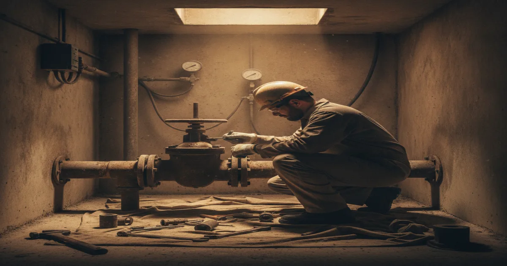
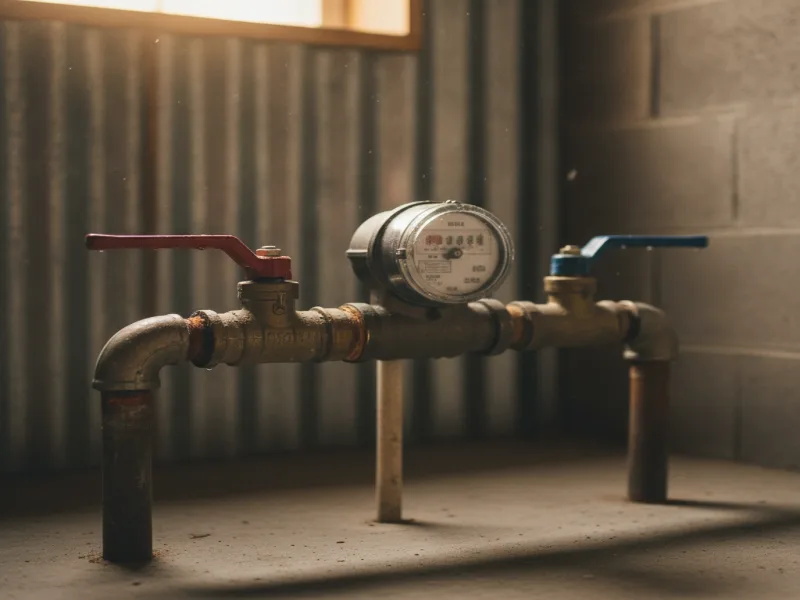

Water Main Repair in Armonk, NY
When pressure drops across your whole home at once, the problem usually isn't a single fixture — it's the main line feeding your house. We find it and fix it.
- Licensed & Insured
- Same-Day Service Available
- Upfront Pricing
- 15+ Years of Experience

Signs of a water main problem
- Water pressure that dropped noticeably across every fixture in the house at once
- A wet or unusually green patch in the yard, often near the street
- The sound of running water when nothing in the house is turned on
- Discolored or gritty water coming from multiple taps
- A water bill that jumped with no obvious explanation
The key difference to watch for: a single weak faucet usually points to that fixture or its supply line. A pressure drop everywhere at once, especially if it happened suddenly, points further upstream to the main line itself.
What causes water main damage
- Age and material fatigue. Older main lines made from outdated materials become brittle and prone to cracking over time.
- Ground shifting. Freeze-thaw cycles and soil movement put ongoing stress on buried pipe.
- Corrosion. Certain pipe materials corrode from the inside, gradually narrowing the line and weakening its walls.
- Nearby excavation or construction. Digging for landscaping, fencing, or utility work can nick or stress a main line without anyone realizing it right away.
- Sudden pressure surges from the municipal system, which can expose an already-weakened section of pipe.
The EPA's overview of the Safe Drinking Water Act covers how municipal water infrastructure and the private line connecting to your home work together — and why aging materials on either side of that connection are a common point of failure.
What to do before you call
- Check whether the pressure drop affects every fixture or just one area of the house.
- Look for a wet spot in the yard between the street and your home, especially near the water meter.
- If you have access to it, note whether the meter is spinning when all water in the house is off — that suggests water is escaping somewhere.
- Avoid running major appliances until we've taken a look, to reduce strain on an already weakened line.
How we repair it
We start by confirming the main line is actually the source of the problem, since a whole-house pressure drop can occasionally be caused elsewhere. Once confirmed, we locate the damaged section, expose it with minimal disruption to your property, and repair or replace that section of line depending on its condition and material.
If the damage is isolated to one section, a targeted repair is often enough. If the line shows multiple weak points or is simply at the end of its usable life, we'll be upfront that replacing the entire water line is the more honest long-term fix, and explain why before you decide anything. Either way, we test pressure throughout the house once the work is done to confirm it's fully restored.
Browse all of our plumbing services for everything else we handle beyond water main repair.

When to call a pro
Call right away if pressure has dropped across the entire house, or if you notice a wet spot in the yard you can't explain. Left alone, a damaged main line can waste a significant amount of water and, in some cases, undermine the soil around your foundation or driveway. If the pressure issue seems isolated instead of whole-house, it may be worth diagnosing weak water pressure at the fixture level first, or scheduling a dedicated leak detection visit if you suspect the water is going somewhere it shouldn't.
See our other essential plumbing services for everything else we handle for Armonk homes.
Frequently asked questions
How do I know if it's my water main or just a fixture?
A single weak faucet usually points to that fixture. If pressure dropped everywhere in the house at once, especially suddenly, that points to the main line.
Will you need to dig up my yard to repair the main?
Sometimes, but we work to minimize disruption and will explain the access needed before we start any digging.
How fast can you respond to a water main issue?
We treat sudden, whole-house pressure loss as urgent and do our best to respond the same day you call.
Is a wet spot in my yard always a water main problem?
Not always, but it's one of the more common signs, especially if it's near the water meter or the path between the street and your home. Worth having checked either way.
Will my water be shut off during the repair?
Typically, yes, for the duration of the repair. We'll let you know the expected timeline before we start.
Do you repair or only replace damaged water mains?
Both. If the damage is isolated, a repair is often enough. We'll only recommend full replacement if the line's condition genuinely calls for it.